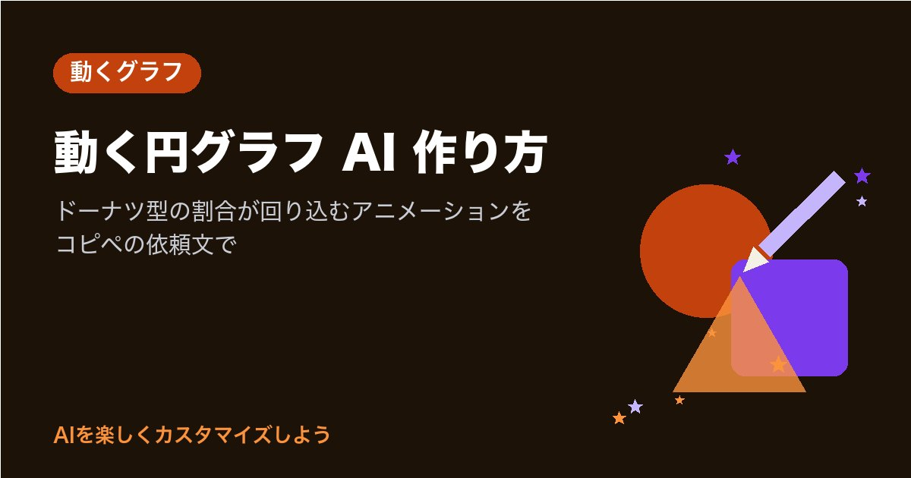
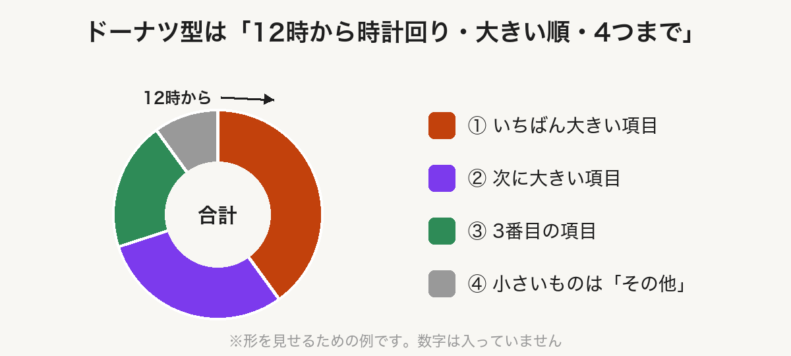

動く円グラフ AI 作り方｜ドーナツ型の割合が回り込むアニメーションをコピペの依頼文で
※この記事はプロモーション（広告）を含みます

会議の資料で「全体のうち、どれくらいがこの項目なのか」を伝えたいのに、表の数字だけでは目にとまらない、と感じたことはありませんか。
そんなときは、割合がくるっと回り込む動く円グラフ（ドーナツ型）が役立ちます。まずは1つ、このページで動かしてみましょう。画面に入ると、円が時計回りに伸びていきます。
- ChatGPT 12本（40%）
- Claude 11本（37%）
- 動くグラフ 5本（17%）
- Gemini・Copilot 2本（7%）
2026年11月27日時点の記事数（この記事を含む）
数字を表で見る
| 項目 | 数値 |
|---|---|
| ChatGPT | 12本 |
| Claude | 11本 |
| 動くグラフ | 5本 |
| Gemini・Copilot | 2本 |
円が回り込んで、「ChatGPTとClaudeで大半を占めている」ことが、表を読むより先に伝わったのではないでしょうか。
確認日：2026年11月27日（公式のヘルプで確認。画面や名前は変わることがあります）
この記事でわかること： ドーナツ型が向く場面、AIに作ってもらう場所、そのまま使える依頼文、数字をずらさない3つのコツ。結論は、項目は4つまでに絞り、数字はあなたが渡して、最後に表で見せてもらうです。
円グラフ（ドーナツ）が向くのは「内訳」を見せたいとき
円グラフは、全体を100%としたとき、それぞれが占める割合を見せるグラフです。真ん中を空けたドーナツ型にすると、すっきり見えて、真ん中に合計の数字を置くこともできます。
| 見せたいこと | グラフの選び方 |
|---|---|
| 全体の中の内訳（割合） | 円グラフ（ドーナツ） |
| 項目どうしの大きさの比べ | 棒グラフ |
| 時間の流れの変化 | 折れ線グラフ |
| 1つの数字の大きさ | カウンター（数え上がる数字） |

読みやすくするコツは3つです。
- 項目は4つまで：5つ以上になるときは、小さいものを「その他」にまとめます
- 大きいものから時計回り：12時の位置から、大きい順に並べます
- 名前と数字を文字でも出す：色だけで見分けなくてよいようにします
AIに作ってもらう場所
公式のヘルプで、作ったものをその場で動かせる場所が案内されているのは、次の2つです（2026年11月27日確認）。
| AI | 場所 | 公式ヘルプの説明 |
|---|---|---|
| Claude | アーティファクト | 会話の横に開き、編集したり、あとで戻ったり、共有したりできる。1ページのウェブサイトや、小さな対話型のツールなども作れる |
| Gemini | Canvas | ドキュメントやアプリ、コードを作成・編集できる。アプリは、プレビューで確認でき、共有やエクスポートもできる |
ChatGPTについては、今日確認したときに、公式ヘルプのページが開けませんでした。ここでは手順を書かず、「1つのHTMLファイルにまとめて」と頼み、コードを保存してブラウザで開く方法をおすすめします。
どのAIでも、うまく表示されないときは「1つのHTMLファイルにまとめて」と頼むと、そのまま保存して使いやすくなります。
依頼文｜そのままコピーして使えます
【 】の中だけ、あなたの数字に書きかえて使ってください。
依頼文（動くドーナツグラフ）
- 次の内訳を、ドーナツ型の円グラフにして、12時の位置から時計回りに、1項目ずつ回り込んで描かれるアニメーションのHTMLを、1つのファイルで作ってください
- 内訳は【項目A 12／項目B 11／項目C 5／項目D 2】です。この数字だけを使い、丸めたり、足したり、作ったりしないでください
- 円の横に、色・項目名・数・割合（％）の一覧を出してください。割合は四捨五入で整数にしてください
- 色は4色までにして、色の見分けがつきにくい人でも読めるよう、名前と数字は必ず文字でも出してください
- 真ん中に、合計の数字と【単位】を表示してください
- 動きを減らす設定の人には、最初から完成した円を表示してください
- 最後に、グラフに使った数字を表にして見せてください
動かしてみて、円の大きさが気になるときは、次のように足します。
- 円を【少し小さく】して、一覧を右に置いてください
- 項目Dの色だけ、【目立つ色】に変えてください
数字をずらさない3つのコツ
動くグラフは目にとまるぶん、数字が間違っていると、それも目立ってしまいます。
- 数字はあなたが渡す：「去年の割合で作って」と頼まず、表の数字をそのまま貼ります
- 「数字は1つも変えないで」と書く：割合の四捨五入も、先に「整数で」と決めておきます
- 最後に表で見せてもらう：グラフに使った数字の表を、元の表と見比べます
割合は、AIに計算させるより、Excelで出した値を渡すほうが安心です。
仕事で使う例と、遊びで使う例
説明用に、サンプルの数字で動かしてみます。実在の会社や家庭の数字ではありません。
- 住まい 4割（40%）
- 食費 3割（30%）
- 趣味・推し活 2割（20%）
- その他 1割（10%）
説明用のサンプルの数字です
数字を表で見る
| 項目 | 数値 |
|---|---|
| 住まい | 4割 |
| 食費 | 3割 |
| 趣味・推し活 | 2割 |
| その他 | 1割 |
| 場面 | 内訳の例 | ひとこと |
|---|---|---|
| 仕事 | 作業時間の内訳（打ち合わせ・資料作成・確認・その他） | 会議の最初の10秒で、時間の使い方が伝わります |
| 仕事 | 不良の原因別の割合 | 大きい原因から手を打つ相談がしやすくなります |
| 遊び | 毎月のおこづかい・家計の内訳 | 家族で見ると、使い方の作戦会議が楽しくなります |
| 遊び | 好きなジャンルの割合 | 自分の「好き」が一目でわかります |
会社の数字を使うときは、AIに入れてよい情報かどうか、会社の決まり（情報の持ち出しや利用のルール）を先に確かめてください。社外秘の数字は、項目名を「A・B・C」に置きかえて形だけ試すと安心です。
向かない人・注意点
- 項目が多いとき：5つ以上は読みにくくなります。棒グラフのほうが比べやすいです
- 割合の近い項目を比べたいとき：円では差が見えにくいので、棒グラフにしてください
- 数字の正確さが最優先のとき：AIが作ったグラフは、必ず元の数字と見比べてください
- 印刷する資料：動きは止まったあとの画面を使うので、完成した円の画面を貼ってください
棒グラフの作り方は、AIでアニメーションするグラフを作るにまとめています。
確かめた公式の情報

まとめ
- 円グラフ（ドーナツ）は、全体の中の内訳を見せたいときに向く
- 項目は4つまで。大きいものから時計回りに並べる
- 作る場所は、ClaudeのアーティファクトやGeminiのCanvasなど。迷ったら「1つのHTMLファイルで」と頼む
- 依頼文には数字を渡す・数字を変えない・最後に表で見せるの3つを入れる
- 会社の数字は、会社の決まりを先に確かめる
最後まで読んでくださって、ありがとうございます。まずは、手元の内訳を3〜4つだけ選んで、上の依頼文に入れてみませんか。
あなたなら、どの内訳を回り込ませてみたいですか？
最後まで読んでくださり、ありがとうございました。
まずは1つのAIで、あなたの呼び名か口調を1つだけ設定してみませんか。次の会話から、AIの返事が少し“あなた向け”に変わるのを感じられます。
あなたなら、AIにどんな話し方をしてほしいですか？
この記事は下書きにAIを使い、内容は運営者が公式情報で確認しています。